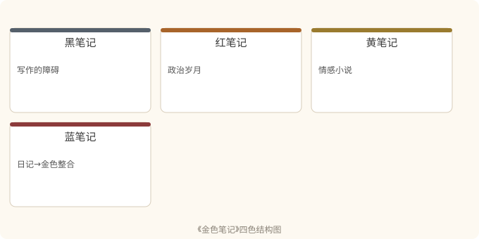

金色笔记
一、基本信息
| 作者 | 多丽丝·莱辛 |
|---|---|
| 成书/出版 | 1962年出版（Britannica：The Golden Notebook (1962)） Doris Lessing — Encyclopaedia Britannica（百科全书） |
| 国别/地区 | 英国 |
| 时代 | 现当代 · 20世纪 |
| 体裁 | 长篇小说 |
| 语言 | 英语 |

《金色笔记》四色结构图（主题·结构图）
二、创作背景
Britannica：'The Golden Notebook (1962), in which a woman writer attempts to come to terms with the life of her times'（一位女作家试图与她的时代生活达成和解）。
Britannica：莱辛的小说与短篇 largely concerned with people involved in the social and political upheavals of the 20th century。
三、内容脉络
结构：一部『自由女性』中篇×4，穿插黑色（写作受阻）、红色（政治经历）、黄色（情感故事）、蓝色（日记）四色笔记，最后汇入金色笔记（结构通说）。
安娜·伍尔夫：作家、前共产党员、单亲母亲——写作障碍与精神崩溃（通说）。
四、主要人物表
| 人物 | 身份 | 说明 |
|---|---|---|
| 安娜·伍尔夫 | 作家 | 四色笔记的主人（通说） |
| 莫莉 | 友人 | 『自由女性』 |
| 索尔·格林 | 美国人 | 崩溃中的共生者（通说） |
五、主题与艺术特点
- 分裂与整合：把生活切成格子再缝合（通说）。
- 女性的『自由』及其代价（通说）。
- 意识形态的幻灭：共产党岁月（通说）。
六、影响与评论
- Britannica：2007年诺贝尔文学奖得主——本作为其最复杂、读者最广的小说之一（Britannica 语境）。
Doris Lessing — Encyclopaedia Britannica（百科全书） - 被广泛视为女性主义经典与后现代结构实验的双重文本（通说待核；莱辛本人对标签持保留态度）。
Doris Lessing — Encyclopaedia Britannica（百科全书）
七、阅读建议
难点
- 五色笔记的嵌套结构——先画结构图。
- 1950年代英国左翼政治背景。
- 陈才宇/刘新民译本（译林出版社，通说待核）。
- 英文原版（企鹅版）。
先读1971年序（莱辛自解）→ 按原文结构通读。
八、待核实
- 《野草在歌唱》1950年（莱辛首部小说）待核。
- 诺奖授奖词原文待核。
- 各中译本信息待核。